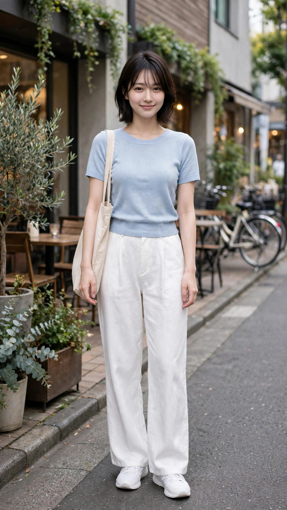

代官山のモデルCは水色の半袖ニットに白ワイドパンツ、元町のモデルCは淡い黄色の半袖ニットに白のロングフレアスカート。モデルCはブルベ夏で、どちらの色もブルベ夏の範囲に入る淡い色です。
水色は朝の光と相性がよく、透明感と爽やかさが前に出ます。淡黄は昼の商店街のような温かい場面で、柔らかさと明るさが前に出ます。同じ「淡い色」でも、青みと黄みで場面の似合い方が変わります。
モデルCは骨格が未定（記録なし）／ブルベ夏。ブルベ夏は淡く柔らかい色が得意なタイプで、半袖ニットのような顔に近いアイテムほどPCの効き方がはっきり出ます。